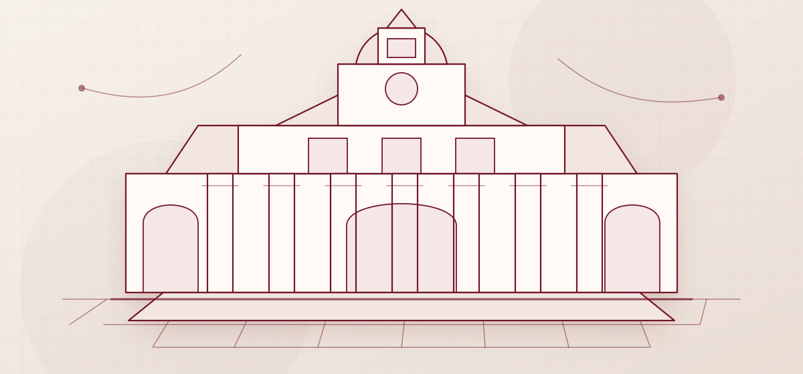

Consulta documental municipal
Consulta pública. Sin caja negra.
Haz preguntas sobre documentos municipales y revisa las citas que sustentan cada respuesta. Cuando no exista evidencia suficiente, el sistema debe decirlo con claridad.
La publicación estática no fabrica respuestas. El asistente sólo se habilita cuando existe un backend real configurado.

ConsultaPregunta ciudadana en lenguaje natural.
RecuperaciónBúsqueda por texto, frase y señal semántica.
EvidenciaFragmentos citables antes de responder.
Salida seguraRespuesta fundada o aviso de evidencia insuficiente.
Integración
Instala el asistente con un backend real.
El widget puede integrarse en un sitio institucional. Configura explícitamente el endpoint HTTPS de la API; sin ese endpoint, la consulta queda deshabilitada.